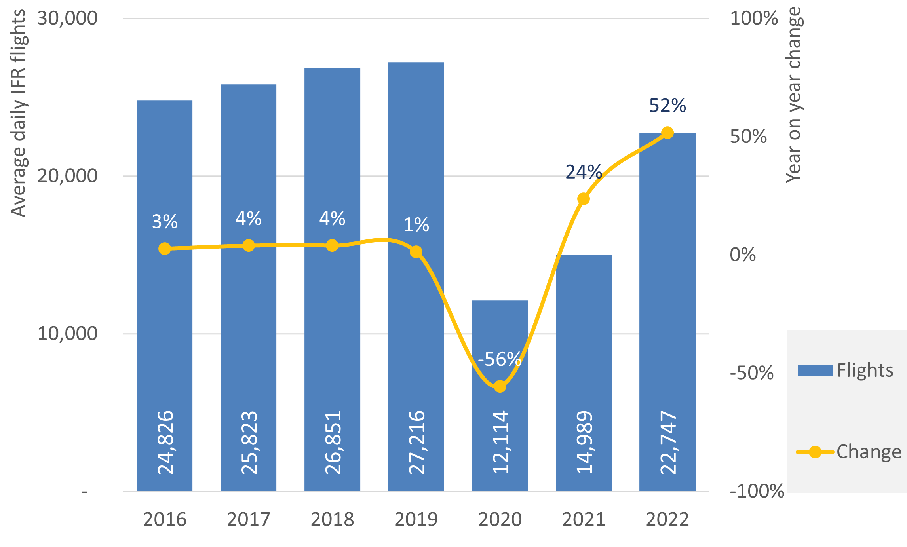

| Month | DAIO | Total | 2022 traffic as % of 2019 | ||||
|---|---|---|---|---|---|---|---|
| Departure | Arrival | Internal | Overflight | 2022 | 2019 | ||
| January | 55,146 | 55,404 | 414,063 | 14,966 | 539,579 | 787,503 | 69% |
| February | 50,617 | 50,790 | 408,170 | 12,509 | 522,086 | 737,763 | 71% |
| March | 59,017 | 59,201 | 515,945 | 12,293 | 646,456 | 846,442 | 76% |
| April | 63,158 | 63,347 | 604,074 | 11,410 | 741,989 | 906,539 | 82% |
| May | 70,824 | 71,101 | 695,949 | 13,273 | 851,147 | 985,862 | 86% |
| June | 76,794 | 77,150 | 725,748 | 13,977 | 893,669 | 1,038,128 | 86% |
| July | 87,643 | 87,541 | 759,745 | 15,615 | 950,544 | 1,092,562 | 87% |
| August | 88,363 | 88,379 | 755,485 | 15,897 | 948,124 | 1,080,554 | 88% |
| September | 81,483 | 81,577 | 721,100 | 15,117 | 899,277 | 1,034,322 | 87% |
| October | 80,012 | 79,570 | 684,229 | 15,033 | 858,844 | 980,049 | 88% |
| November | 70,939 | 70,868 | 536,747 | 14,772 | 693,326 | 801,961 | 86% |
| December | 74,221 | 74,021 | 527,941 | 16,469 | 692,652 | 793,617 | 87% |
| Total | 858,217 | 858,949 | 7,349,196 | 171,331 | 9,237,693 | 11,085,302 | 83% |
| Source: STATFOR Interactive Dashboard | |||||||
3 Number of IFR flights
3.1 EUROCONTROL recommended values
This section presents the evolution of flight movements in Europe (ECAC area) by flight flow, market segment1 and aircraft type.
3.1.1 Evolution of flights per flow in Europe (ECAC) in 2022 compared to 2019
Please note that the comparison between 2022 and 2019 in Table 3.1 is due to the fact that 2019 is the last year where the traffic levels were not affected by the COVID-19 pandemic, allowing for a more realistic comparison of the flight levels.
3.1.2 Flights by market segment in Europe (ECAC) in 2022 compared to 2019
| Market segment | 2019 | Share of Total 2019 | 2021 | Share of Total 2021 | 2022 | Share of Total 2022 |
|---|---|---|---|---|---|---|
| Mainline | 3,991,685 | 36% | 1,816,909 | 29% | 2,981,880 | 32% |
| Low-cost | 3,493,913 | 32% | 1,610,239 | 26% | 2,984,376 | 32% |
| Regional | 1,643,854 | 15% | 861,587 | 14% | 1,219,685 | 13% |
| Business Aviation | 683,473 | 6% | 709,398 | 11% | 791,909 | 9% |
| All-Cargo | 368,362 | 3% | 419,824 | 7% | 389,611 | 4% |
| Other1 | 372,796 | 3% | 363,712 | 6% | 389,396 | 4% |
| Charter | 382,218 | 4% | 303,384 | 5% | 324,824 | 4% |
| Military | 149,001 | 1% | 145,699 | 2% | 156,012 | 2% |
| Total | 11,085,302 | 100% | 6,230,752 | 100% | 9,237,693 | 100% |
| Source: STATFOR Interactive Dashboard | ||||||
| 1 The “Other” market segment contains flights that do not fall in any of the remaining segments mentioned in the table, such as helicopter flights, etc. | ||||||
In 2022 the total number of flights went up by 48% compared to 2021 but was at 83% of 2019 flight levels (pre-COVID-19). Compared with 2019, two segments increased in 2022, All-Cargo (+6%) and Business Aviation (+16%). The Mainline (-25%), Low-Cost (-15%) and Regional (-26%) segments were the most affected, along with the Charter segment which went down by -15% in 2022 (vs 2019).
3.1.3 Top 20 number of flights by civil aviation aircraft in Europe (ECAC) in 2022
| Aircraft Type | Flights | Proportion | Cumulative1 |
|---|---|---|---|
| B738 | 1,717,381 | 20% | 20% |
| A320 | 1,417,930 | 16% | 36% |
| A319 | 513,699 | 6% | 42% |
| A20N | 462,294 | 5% | 47% |
| A321 | 371,456 | 4% | 51% |
| A21N | 296,722 | 3% | 55% |
| B38M | 270,614 | 3% | 58% |
| AT76 | 210,778 | 2% | 60% |
| E190 | 210,022 | 2% | 63% |
| B77W | 163,600 | 2% | 64% |
| B789 | 135,989 | 2% | 66% |
| A333 | 128,892 | 1% | 67% |
| E195 | 124,823 | 1% | 69% |
| CRJ9 | 112,652 | 1% | 70% |
| AT75 | 100,619 | 1% | 71% |
| DH8D | 93,110 | 1% | 72% |
| BCS3 | 90,613 | 1% | 73% |
| A332 | 86,165 | 1% | 74% |
| B788 | 80,654 | 1% | 75% |
| A359 | 78,200 | 1% | 76% |
| Other types | 2,073,792 | 24% | 100% |
| Total | 8,740,005 | 100% | NA |
| Source: EUROCONTROL STATFOR | |||
| 1 Please note that the percentages in “Proportion” column are rounded, which results in cumulative values that may differ from the expectations. | |||
In 2022, about 76% of all IFR flights in Europe were carried out by the 20 aircraft types listed in Table 3.3. Please note that the values presented in Table 3.3 focus on the civil aviation flights (i.e. excluding the military and other categories), resulting in a difference in the total flights as compared with Table 3.2 and Table 3.1.
3.1.4 Daily average of IFR flights, 2016 to 2022
Figure 3.1 shows the daily average number of IFR flights EU-wide between 2016 and 2022.

3.2 When to use the input?
This input is recommended to be used in situations where an overview of the historical evolution in the number of flights is required, namely grouped according to different criteria.
3.4 References
[1]
EUROCONTROL PRU, “Reporting Period 3 - 2022 dashboard.” [Online]. Available: https://www.eurocontrol.int/prudata/dashboard/vis/2022/
The market segments are defined according to EUROCONTROL STATFOR Market Segment Rules. Please refer to the 2022 document for further details on what each segment comprises.↩︎